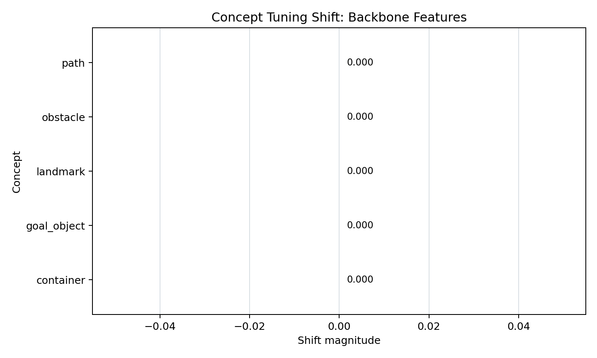
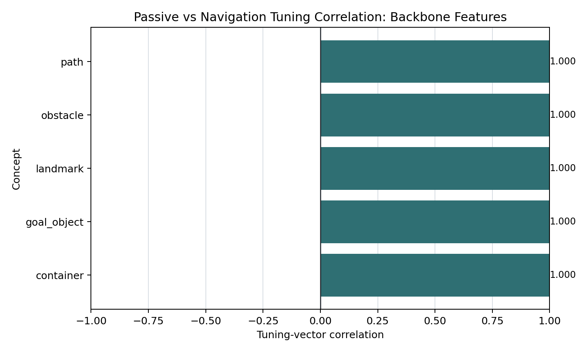

CKA Similarity

CKA compares the overall geometry of activation spaces. Higher values mean the same images are organized more similarly.
Concept Shift

Tuning Correlation

Backbone Features Metrics
| Concept | Shift | Correlation | Cosine | Norm Delta |
|---|---|---|---|---|
| path | 0.000 | 1.000 | 1.000 | 0.000 |
| obstacle | 0.000 | 1.000 | 1.000 | 0.000 |
| landmark | 0.000 | 1.000 | 1.000 | 0.000 |
| goal_object | 0.000 | 1.000 | 1.000 | 0.000 |
| container | 0.000 | 1.000 | 1.000 | 0.000 |